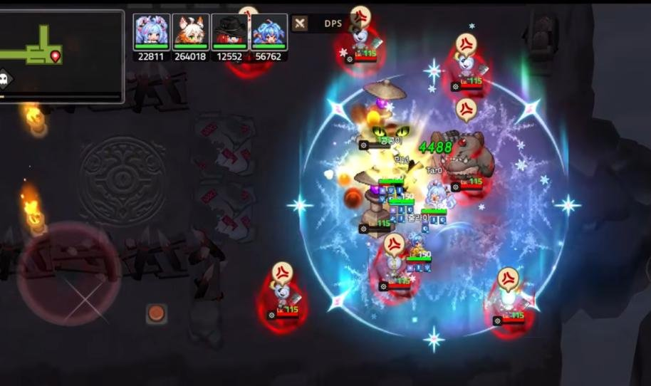

각 방은 일반 전투, 방어전, 보스 전투 중 하나로 잡고, 오브젝트 기믹이나 몬스터 액션으로 파티원의 역할 수행이나 협동 미션을 요구했습니다.

← 전체 프로젝트
C · Stage Level Design · 4P Co-op · Live
협동원정대 스테이지
4명이 역할을 나눠 퍼즐과 전투를 푸는 가디언 테일즈의 최종 콘텐츠입니다. 모든 시즌을 작업했고, 시즌3는 스테이지·기믹·몬스터·보스를 총괄했습니다.
KEY 1 · 역할
딜러 · 탱커 · 힐러의 협동
역할을 수행해야만 열리는 롤플레잉 기믹으로 방을 채웠습니다.
KEY 2 · 직관
소통 없이도 읽히는 방
모바일 Co-op이라 말 대신 카메라, 스위치, 화로 같은 오브젝트로 목표와 진행 상황을 보여 줬습니다.
KEY 3 · 반복
방마다 다른 컨셉
반복하는 PVE라 피로도를 낮추려고 방 단위로 컨셉을 나누고, 시즌 3.5에는 랜덤 분기를 넣었습니다.
ROOM GIMMICKS
오브젝트와 몬스터로 역할을 부여
| 몬스터 옵션 | 피격당하면 카운트가 쌓이고, 풀카운트가 되면 행동 불능. 힐러가 상태 이상 치유로 주기적으로 카운트를 지웁니다. |
|---|---|
| 실드 몬스터 | 대미지의 90%를 상쇄하는 실드. 몬스터의 돌진 방향을 유도해 실드를 벗겨야 합니다. |
| 몬스터 액션 | 전방향에 투사체를 만들어 자신에게 끌어당기는 몬스터. 빈 공간을 찾아 피하거나 탱커가 실드로 막습니다. |
| 필드 오브젝트 | 지속 피해를 주는 AOE. 탱커가 피해를 감수하고 돌파합니다. |
DECISION · 시즌 3.5 이름 없는 자
50% 랜덤 분기로 매 판 다른 루트
매칭으로 모인 4명이 메인 경로를 따라 이동하는 선형 구조입니다. 같은 맵을 반복해도 다른 경험을 주려고, 첫 전투 뒤 랜덤 트리거가 50% 확률로 A 또는 B 루트를 고르게 했습니다.
두 루트는 전투 스타일이 완전히 다릅니다. A 루트는 자폭 몬스터, B 루트는 번개 · 특수 보호막 몬스터를 중심으로 짜고, 마지막에 같은 보스 방에서 만납니다.

전투 1 · 공통 구간
흩어졌다 다시 모이는 3단계 미션
입장 전 이동 구간에는 피격당 ‘HP 1’ 고정 대미지만 입는 파괴 오브젝트로 길을 막아, 부수는 데 몇 번 쳐야 하는지부터 익히게 했습니다. 이어지는 첫 전투는 협동 콘텐츠의 기본기를 가르치는 세 단계 미션입니다.
1단계모든 스위치 눌러 도어 열기
큰길을 막는 도어와 바깥쪽 스위치를 노출. 카메라 너머의 레이저 몬스터를 피하다 보면 유저가 자연스럽게 흩어지고, 화로가 스위치 상태를 알려 줍니다.
2단계결계 오브젝트 학습 · 해제
레이저 몬스터의 시간차 공격으로 중앙에 모으고, 결계 위에 올라서면 불이 꺼지는 연출로 해제 방법을 알려 줍니다. 해제하면 도어가 열리고 몬스터 방어 버프가 사라집니다.
3단계포위 전투
안으로 들어온 뒤 다음 웨이브가 포위형으로 등장. 탱커가 도발로 어그로를 끄는 기본 전투 구도를 익힙니다.
A 루트 · 자폭 몬스터
역할을 나눴다가 서로의 길을 열어 준다
- A-1 협동 퍼즐
- 입구에서 두 동선과 스위치를 보여 줘 클래스별 역할을 유도. 탱커 동선은 투사체 석상과 AOE 장판길, 나머지는 장애물을 부수고 점프 발판으로 가는 길. 분리된 파티는 서로의 길을 열어 주고 마지막 구간에서 합류하며, 결계 기믹을 복습합니다.
- A-2 역할 분담 전투
- 탱커가 적을 끌고 파티원이 결계를 해제. 1웨이브는 입구의 타겟형 레이저 몬스터, 2웨이브에서 자폭 몬스터 패턴을 익힙니다.
- A-3 3웨이브 연속 전투
- 점프 발판으로 방 중앙에서 시작해 동선이 지루하지 않게 했습니다. 1웨이브는 결계 심화, 2웨이브는 수많은 투사체 몬스터를 탱커 실드나 엄폐물로 막고, 3웨이브는 샌드위치처럼 좁혀 오는 자폭 몬스터 심화전. 중앙의 자폭병 생성 몬스터를 잡아야 아래 공간이 열립니다.



B 루트 · 특수 보호막 몬스터
함정과 보호막으로 짜는 개인 미션
- B-1 결계 해제
- 카메라로 결계 오브젝트에 시선을 끌어 도어를 여는 구조를 보여 주고, 각자 개인 미션으로 팀에 기여하게 했습니다. 다음 단계에선 스위치를 노출해 목표를 알리고, 투사체 위치와 발사 간격을 보여 줘 탱커의 역할을 유도합니다.
- B-2 상 · 하 각개 격파
- 입구의 AOE 장판으로 딜러 2인과 탱커·힐러 파티를 나눕니다. 모두 한쪽 입구로 들어가도 깰 수 있게 열어 뒀습니다. 배리어 밖에서는 대미지가 줄고, 주변 몬스터를 잡으면 장애물이 사라집니다. 2웨이브에서 특수 보호막 몬스터를 익힙니다.
- B-3 좁은 길목 전투
- 바깥을 ‘ㅁ’자로 돌아 안으로 들어오는 좁은 외길. 전투 내내 특수 보호막 몬스터가 간섭하고, 모든 유저 위치에 번개가 떨어집니다.
PROCESS
전투 스테이지 기획 프로세스
1스테이지 컨셉
코어 경험을 정하고 ‘방’ 단위로 공간 컨셉 구상
2전투 흐름
클리어 시간 · 동선 · 학습과 피로도를 고려한 청사진
3세부 작업
3D 팀이 만든 맵을 작업 툴로 조정, 몬스터 · 기믹 · 카메라 배치
4밸런싱
유저 스펙 · 컨트롤 등 여러 테스트 환경에서 검증
ORIGINAL SLIDES